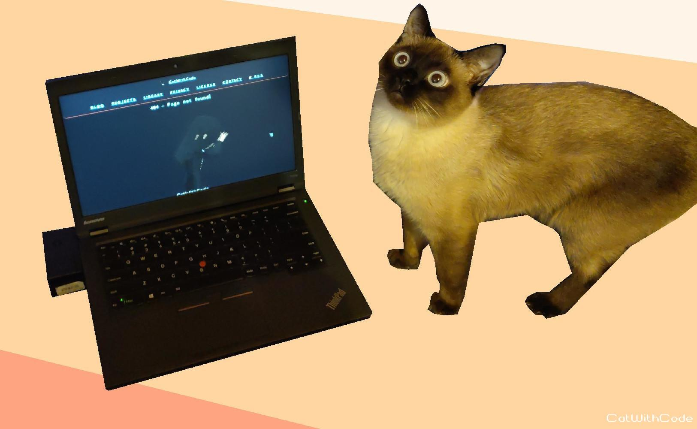
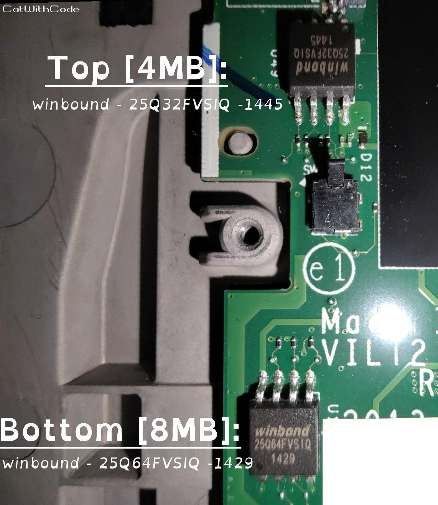
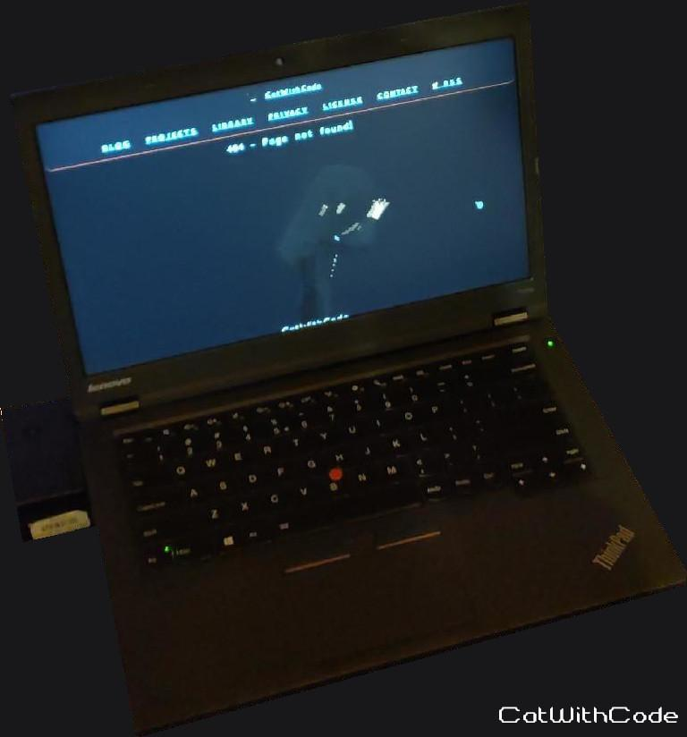

Yes I know I'm literally the Thinkpad-Meme but, hey it was a lot of fun.
There will be a lot of text walls and for some redundant information. I linked to EVERYTHING I found and used in the sources section. Here is a list of the things I will write about on this page:
Why the Lenovo ThinkPad T440p: After installing Coreboot it is the most open and powerful AND cheapest (that already removes most "new" Coreboot Laptops out of my target range. But I really love they exist now! Greate job!) Laptop that supports Coreboot (at the moment). It is extremely reparable, replacement parts are plentiful because it is enterprise hardware (which sadly pushes the prices for parts a bit higher then what the parts are actually worth). And its a meme, like no joke. The laptops were so popular because of all the posts and memes mentioning them, they became a really expensive for a short while because of it. Battery life is... ok... not good, really just okay. And you need to replace nearly every important part to make it modern LOL but I now can see why they are so popular (and a meme).
After buying the laptop locally at an hardware refurbishment and resell store for 110 euro, buying around 280 euro on replacement and upgrade parts (legit this meme: Buys 10 year old 100 euro laptop, invests 3 times as much in parts) it is unbeatable when it comes to price, quality, repairability, openness and performance. BUT: All that can be had by just buying a SteamDeck. It is not a laptop but for 420 euro (320 euros sometime one sale for the old models :O) the SteamDeck is UNBEATABLE when it comes to the price. And the community is also there and supporting it very well! The Thinkpad community also exist with a lot of tinkerers but is very disjointed, all over the place and often badly archived and all over the place. That's also the reason why I archived many websites I linked to because many were already down while I was researching... .
Laptop: Getting the laptop itself is relatively easy to find in 2024 (after the meme and hype calm down and the scalpers got a live or moved on scamming other people). It is 10 years old and all company's still using them are now selling off there stock and replacing them (the usual life cycle in big company's). You can get them for around 110 euros or so. I would recommend getting a basic one. The Lenovo ThinkPad T440P with an Intel Core i5-4300M and 8GB of RAM without GPU is the most common one, and then replace most parts of it LOL. The (in my OPINION) worst model is the one with the Nvidia GPU. The GPU sucks but is a bit better the Intel iGPU. The downside with that is, to get the most out of the T440P you'll need to update the CPU and install Coreboot, meaning Linux will be the new and best supported OS for that Laptop and old Nvidia GPU's and Linux ARE a nightmare. Don't even bother with getting one. Or even more, avoid them. Old Nvidia GPU's are not well supported and are forced to use literally trash tier drivers. See my iMac 2013 blog entry for more about old Nvidia GPU's Vulkan support and E-Waste. The Intel iGPU works with Mesa and is perfectly functional out of the box on ANY Linux distribution (And yes, this part of the entry said something different in the past but after fighting with the drivers on the iMac I will never recommend Nvidia ever again. Don't get me wrong, old AMD/Intel-GPU's have their issues as well but they still run with the most recent Mesa driver and don't need patching the kernel module like old Nvidia drivers. And most likely they still support more recent Vulkan and OpenGL versions which makes them just better in my opinion for day to day use: /2025.04.25_iMac_2013_in_2025/iMac_2013_in_2025.html).
Also a Warning!: Don't buy a BIOS/Hypervisor locked one. Check before you buy if you can or ask the seller/check the images/text. Even when installing Coreboot, some security measures CAN still be there and ruin everthing!
CPU: The strongest theoretically installable CPU is the Intel Core i7-4980HQ. But it is very sketchy, only available on let's say, less trustworthy shops online, and the quality is also bad and it is really expensive for what you get. They are apple mac book CPU's re-soldered onto a adapter board. Even thought they work they are way to power hungry and will perform badly with the cooling system in the T440P. Most of the time it will only chew though your battery and (from some reports) perform worse because of thermal throttling. But it has one redeeming quality. Its iGPU (Intel Iris Pro Graphics 5200) is a good bit better then even the relatively rare Nvidia GPU in the T440P. Then there is the Intel Core Extreme i7 4940MX. It is an officially available socketed CPU from Intel an its downside is being extremely rare, expensive when you find on (for what it can do) and will have the same issue as the 4980HQ because of the cooling system. But this time you are not even getting any other benefits because it uses the same GPU as all other normal CPU's for the T440P. And the worst part: The price often sits around 150 euros and is also often sold by sketchy online shops or "refurbisher". Refurbishing a CPU... sure. And what is the best CPU overall? The Intel Core i7-4710MQ (And no the 4712MQ is not better, it is a little little little bit weaker. Intel and numbering makes absolutely no sense) With replaced good thermal past and cleaning of the computer, Coreboot installed, TLP and a little bit of undervolting and overclocking with dual channel RAM as fast as the CPU can handle. That's (at least from the community) deemed to be the best CPU to use. An one nice thing too compare to the other options: It only costs around 30 euros for around 15% less theoretical performance when compared with the other two option but this time you can get all of it with little to now downside. ALSO: 15% of an old CPU from 2014 is still only 15% of an old CPU from 2014. Not the biggest difference when we are already talking about the top of the top of CPU's of this type and generation.
GPU: T440P and GPU performance is... well... not really a thing. The Nvidia GPU sucks too. In numbers from some performance test of Wolfgang on YouTube the i7-4710MQ gets around 300 points. The Nvidia GPU around 1000. Sounds like a lot but is only 7 fps more in most games the iGPU could not handle. Going from really really bad to still very bad. The i7-4980HQ COULD get around 1300 points but you guessed it. Still sucks. If you want performance, portable for little money, get a SteamDeck. The iGPU, the 4980HQ and the Nvidia GPU are all out of supported and thier Vulkan support is not really al that good. You can some small titles but anything more demanding you can forget immediately. I discovered that even some tech in games and software that improves performance on modern hardware makes the performance on this old hardware even worse.
e-GPU???: THEORETICALLY possible. You could replace the WiFi card with an adapter to connect a GPU with one PCIe2x1 lain BIG UFF. As far as I could see no one has tried that. You also would need Coreboot because of the BIOS whitelist thing Lenovo dose. The expansion slot could also be modded to be used like this but that would be so out of spec of a normal PCIe slot I don't thing it would work at all.
There is also a Dock that has a PCIe2x1 Slot. It is extremely rare and has MANY limitations:
https://youtu.be/idGVVv1-PRk
https://youtu.be/NcwPJm3tlms
RAM: The most amount of RAM you can install is 16GB. 32GB is theoretically possible with the higher end CPU's but as far is I could and was willing to research 16GB is the bandwidth limit of the mainboard.
SSD: I installed an M.2-2242 SSD. I only could find one on the marked where I live. They are realty rare because they are kinda of a abomination. The slot often gets used for WiFi, Bluetooth or Modems, but is more or less just PCIe lains you can connect an SATA-M.2 SSD to it. But it MUST be "M.2-2242". It is a very specific port that is only compatible with that type. Make sure to find one with DRAM-Cache. If you can not find any with the cache then don't install one and just use normal SATA-SSD. I will not replace the Disk-Drive because I think it can be very useful. The more ports and types of media it is compatible with, the better. Sadly it is not possible to install a Blu-Ray drive. Some people theorized you could gut a other laptops drive and put it into the T440P but no one tried and it would be very wasteful. Most importantly, it will most likely not be a 4K capable or 4K extendable drive that also can not burn. That would make it mostly useless for me.
WiFi: Intel WiFi 6 Model AX200NGW is the best WiFi chip the mainboard can use. Others are theoretically possible but most use these and they cost only 10 euros each.
Display: Replace your display. The original TN panel is an insult to the eyes. There are many drop in replacements for the T440P and related. Just get one that is sold commercially, not sketchy, professional looking and has some reviews or reports of working fine in the T440P. Will cost you around 50-70 euros for a better one.
Battery: A replacement battery will most likely will be needed. Just buy a third party one that is professional and not trying to be extremely cheap or impersonate as a original one. Will most likely be around 30 euros.
Touchpad: If yours has the good Touchpad (the one with the 3 buttons at the top and a points on backplate) then you don't need one, if not, buy one IF YOU CAN. There are the good reliable "Synaptics"- Touchpad's and the bad, unreliable, broken driver "Alps" once's. What people say about them is true. I got my hands on a "Alps" and a "Synaptics" one and, at least in Europe, to reliably get a "Synaptics" one is hard. The original "clunkpad" as the community lovingly calls them is really not that bad. It sucks in almost any task but it is fine (As long as it also a "Synaptics"-"clunkpad", if not REPLACE IT!). Better then the the 3 button Alps for sure. The 3 button "Synaptics" trackpad is really great. I thought people were just joking or are bias for the "Synaptics" once but they are really so much better. If you have a "Synaptics"-"clunkpad" and are able to get a good 3 buttons "Synaptics" Touchpad for around 20 euros, get it. Else I would still not bother. The amount of work to get a good "Synaptics"-3 button one is just annoying. A 3 button-"Alps" is... fine if it works but I would not use it.
Also: When connecting the 3 buttons-"Synaptics"-Touchpad, make sure that the cable fits PERFECTLY and is really securely in the connectors. Only the original cable will work, cables form different models, for some reason, short out the connector... .
Also Also: The buttons only will start working if the keyboard and its two ribbon connectors are also connected. You might also have to install xf86-input-synaptics, libinput, xf86-input-libinput and then to reboot.
Keyboard: I replaced the keyboard with an official, used, good condition backlight US english one because hell no am I not using german ISO layout. The german one has a far FAR better switch construction. On the german keyboard I removed a switch like 3 time and the key even more and everything was fine. I damaged one on the us keyboard and at the end I needed to replace three switches with once source from a donor keyboard. The plastic of the backlight US keyboard is also not nice. Its smooth and looks literally abused even though its nearly new in my case. The non backlight plastic has a rough texture and is realty nice to be honest. You have to decide if its worth to have a backlight and having the far more sensitive US plastic (IDK. If it has to do with region or it is just coincidences that the plastics are always like this on the keyboards I got my hands on). But more about that later.
CoreBoot: Meme, Freedom, Meme, More options, Meme, No spyware, Meme, Getting the most performance, and ah also: Meme.
OS: Linux, OF COURSE! Arch... btw.
I waited for all parts to arrive and unpacked them. Took around a week and multiple used parts marked place website sellers. The hardware, especially when used, can sometimes have varying conditions. Be prepared to search a lot for good deals and good used parts.
I checked if the T440P worked, then I started with cleaning it because it had the business goo on it. Meaning: It was dirty in the most gross way possible: Mostly rubbed of skin. After that was over it I finally can touch it without wanting to puke and tested it a little and everything seemed to work.
First on the agenda was a BIOS-Update. The last bios was released in 2021 (WOW! That long support!). After checking that it should work with Coreboot, I burned it to a CD and installed the update.
Then I already started with coreboot installation. I wanted to get the hardest thing out of the way first. A Coreboot install only must be done once and after installing it you can access the main bios chip (4MB) from the bottom cover without a need to open the laptop fully (as long as you don't break your Coreboot install with an update intentionally). The build script actually makes really sure that everything is in order. That's also the reason why so many are complaining they can not compile. EVERYTHING must be setup just right.
I mainly used this guide to get it working with some knowledge on about work with large software projects with involved build pipelines (huge thanks to Blopi_GT on Reddit for documenting there installation!):
https://www.reddit.com/r/thinkpad/comments/1db1gmu https://web.archive.org/web/20240713113658/https://old.reddit.com/r/thinkpad/comments/1db1gmu/lenovo_t440p_with_tianocore_edk_2_build_guide/Small rant about Coreboot and Reddit (ALL MY OPINION AND NOT FACTS :P):
Coreboot: Getting basic knowledge about Coreboot without investing hours is impossible. I get that Coreboot is more about industrial and large computing but still. No one should have to go though tones of websites of documentation and papers about the boot process and building a BIOS to just use it. After getting it to work and toying around with the configures you get a feeling for what your doing but to say the amount of very verbose information as absurd for normal users. But they are not the target and that's fine... just... make a simple example page with an example device going through a setup process would already be enough to then to apply it (with some device specific information from the wiki pages) to any supported device can be done by everyone.
And now Reddit: WTF is up with this website. The simple process of archive important information is made 10 times harder for archive.org by Reddit. A side formally known for the plethora of information is now nothing else then a data hording cyclic jerk that won't let any archiving effort go through without a fight because what is information worth anyway. Everything is about closing API's, """AI""" and !content!. Who cares about being something good in this world anyway. Where you came from is irrelevant, what investors pay tomorrow that is what counts now! Sorry, but that rant about Reddit needed to get out after so many issues with this f****** website.
I used the official manual to open the laptop (which is actually really really good). Then came backpacking my OG-BIOS. Besides some false information about a 3.3V and 5V """issue""" discussed online about the flasher everything went smooth. The only thing was that my chips needed slightly different read parameters then I could find anywhere. I used them on any operation with the flasher but will only mention them here. Here are the commands (with the special chip parameters and an image of my chips for documentation):
---
sudo flashrom --programmer ch341a_spi -r 4mb_backup1.bin -c W25Q32BV/W25Q32CV/W25Q32DV
sudo flashrom --programmer ch341a_spi -r 4mb_backup1.bin -c W25Q32BV/W25Q32CV/W25Q32DV
---
sudo flashrom --programmer ch341a_spi -r 8mb_backup1.bin -c W25Q64BV/W25Q64CV/W25Q64FV
sudo flashrom --programmer ch341a_spi -r 8mb_backup1.bin -c W25Q64BV/W25Q64CV/W25Q64FV
---
TOP [4MB]: winbound - 25Q32FVSIQ - 1445 >> USING: W25Q32BV/W25Q32CV/W25Q32DV
BOTTOM [8MB]: winbound - 25Q64FVSIQ - 1429 > USING: W25Q64BV/W25Q64CV/W25Q64FV
---
On the bottom chip I accidentally connected the flasher the wrong way for a few seconds but no damage was done (thankfully).
After getting my BIOS image I followed the guide and did all the steps. I used arch. The installer supported it and prepare the dependency's and even showed me packages I still needed to add myself. I also used master branch. I followed every step carefully and at the end, and around 3GB later, I had my Coreboot BIOS. I also used "ME-Cleaner" to clean the image which worked flawlessly. Then I flashed the images with the same -c parameters as I read the BIOS image with. And after a little bit of reassembly and one press of the power button later I saw the Coreboot logo! SUCCESS!
As far as I know you don't need to access the bottom chip again because it only holds the blobs and the Intel ME stuff if I understood it correctly. Updating is thankfully done in Linux with soften kernel security parameters. If you break Coreboot you should only need to access the top chip which can be accessed through the bottom door of the T440P. In the worst case you need to re-flash everything. The more important part seems to be that you MUST make sure to not lose the OG-BIOS images because they seem to be hardware specific for the bottom chip. I'm not 100% sure about that but I also could not find any uploaded BIOS backups from others so... MAKE BACKUPS!
I reassembled most if the Computer, installed the new i7-4710MQ CPU, the new WiFi-Card, the SSD, the M.2 SSD, applied thermal paste and the cooler and installed the new RAM (Coreboot seems to use the XMP speeds if the RAM has them implemented correctly without asking or enabling it (as far as i could see. No XMP/SPEED settings in the nconfig menu). For me it worked, IDK. what happens if the CPU can not handle the XMP speeds.)
I installed the Trackpad after I was already done because it was so hard to find a good "Synaptic" 3 button one. The connection is really sensitive and you need to make sure it is connect probably. You also might have to install xf86-input-synaptics, libinput and xf86-input-libinput and reboot. Don't connect and disconnect the keyboard, trackpoint or the trackpad while the laptop is still running! They are NOT connected over USB and probably are not made to be hot-plugged (same as PS2 back in the days)!
I also got a new BIOS battery because the 10 year old button cell will probably fail soon lol.
The keyboard is a different story. I installed it and wanted to access the screws to secure it down. one of the keys got stuck and pushed up only a little and broke the switch and keycap. The US keyboard with backlight is hella fragile. BE VERY VERY VERY V-E-R-Y CAREFUL! NEVER REMOVE KEYS OR SWITCHES!!! The very durable german switches were the "LI120"-type switches and Keycaps and the US keyboard with the backlight had the "LI127"-type switches and Keycaps. I could not repair it and needed to get a donor board to replace the broke switches and Keycaps.
Then came the screen replacement. You must be very careful with the Display connector cable because they are very sensitive to damage in general. When mounting the display make sure all metal brackets are probably aligned with there plastic pegs top make sure to not cause any pressure points on the display. Opening the display plastic must also be done extremely, and I mean EXTREMELY carefully. Once broken or bend it will stay that way.
Then I just needed to close everything up and install Linux on it. Arch obviously. And after updating my Hyprland Dot files to be usable in Desktop and the Thinkpad at the same time with the same config it was done. I did some performance tests, Checked the hardware and clockspeed's and everything seems to be working perfectly. The new screen is not perfect, but IPS 1080p at that screen size can only look good. Colors, Refresh rate and calibration is all a little off but as far as I could see there an not (still in production/sell) screens that are much better. The connector and hardware dose not allow for more the 1080p@60hz.
It was quite a bit of work, a lot, and I mean, a lot of research when choosing parts and finding well prices sellers, way to much reading for Coreboot and then putting all together took place in around two weeks. I really like my little Thinkpad. It is not perfect but compared to my partners cheap laptop it is a beast for the same price. Battery life is actually fine... as long as you don't do anything intensive. The i7 sucks back A LOT of power. Minecraft for 10 minutes sucks %'s likes its air. Coreboot works perfectly, surprisingly. Virtual machines, XMP (Less XMP more actually using the speed of the modules and not just defaulting to DDR3 defaults of 1333Mhz) and everything from Sleep (with breathing Thinkpad LED) to TLP or any weird hardware I connect to it, it just works. I won't put Windoff anywhere near this laptop. This is a windows free household xD. Meaning: I really don't give a f*** if windows works with Coreboot and Tianocore. It works perfectly with Linux and that's all I need to know. I found some posts deep in Reddit (...) that I can no longer find when searching... about the first boot being at a very low clock speed. I can confirm that. but after one shutdown and power on it was gone for ever. No Audio, Headphones, WiFi or Bluetooth issues here. Evert hing works perfectly My so called "diry" build is based on the latest commit with the ID "d095f1ea45208d8bcae5619806f5e59fa6b4eeb1":
https://review.coreboot.org/c/coreboot/+/84374Later I got my hands on a good used "Synaptics"-3 buttons Touchpad was also worth it. More option on how to use the mouse and it just feels and works far better then the original "clunkpad". I also got a "ThinkPad Pro Dock - Type 40A1" from a friend and after a Firmware Update for the Dock later (You must use Windows and must have connected a display to it (DP)) it works well. Hyprland is a little temperamental while connecting and disconnecting but GDM and Gnome with the display remember fix from Arch forks extremely well (GDM overwrites Gnome's Screen Settings... And Gnome wants to be viewed as the polished, just works, DE and has this kind of jank... not to mention the GDM main screen bug... sorry for the rent but I really don't like Gnome. But it works the best with Tinkpads… lol): https://wiki.archlinux.org/title/GDM#Setup_default_monitor_settings.
UPDATE - 2025.05.05: I found a post about the Blu-Ray drive "bu40n" by "yeyderp". They say it can be installed and the faceplates seem compatible. I got one, could carefully swap the faceplates and installed it. It had "ROM VER:1.05". I used an "SPF tool" to flash the firmware "1.03MK". I installed a Win10 SSD temporarily into the Laptop (Only 10 booted on Coreboot for me) to do it. Now I can watch Ultra HD 4K Blu-Ray's with it too. In the past there seemed to be more steps involved to downgrade/enable UHD support for it but at least now it is just a matter of flashing the firmware and you can use UHD-Blu-Ray's with it. There also seemed to be one that has UHD support from the factory but it is not available in my area, like at all: https://www.reddit.com/r/thinkpad/comments/16rlbry/comment/m2fz1k4
I hope I could motivate someone to also give it a try. I really like the overall setup and really get now why people love the old Thinkpads so much.
